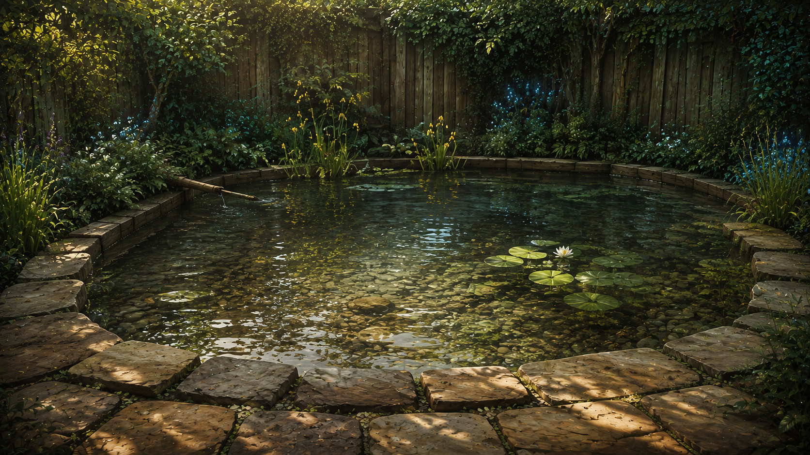

A matching render set has not been published.

Current VN guide 3D reconstructionDrag the divider to compare. Use the arrow keys while the divider is focused for finer control.
The basin and its banks
Compare the shoreline, the broad dry paving and the planted timber boundary. The model is an interpretation of these visible relationships.
This study reconstructs the pond from the visual novel’s proportions and the actions at its banks. The illustrations guide shape, staging and atmosphere; they are not measured blueprints. Metre scale, water depth and details outside the frames remain proposed.
The Blender file contains editable geometry for orbiting and inspecting the basin, paving and surrounding planting. Read the study notes alongside the comparisons for the current interpretation and its limits.